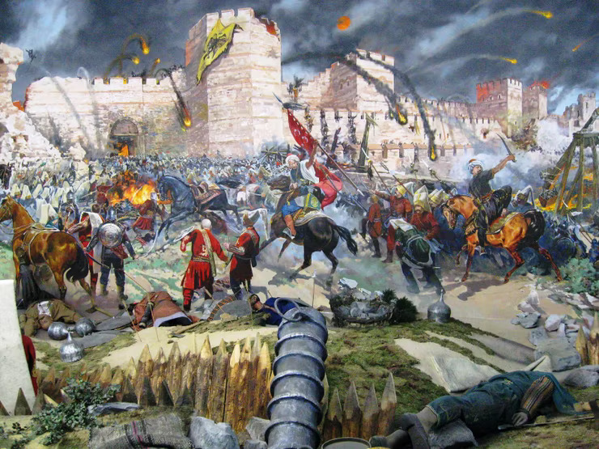
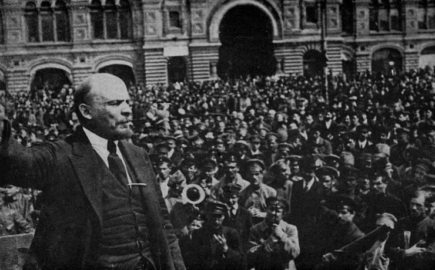
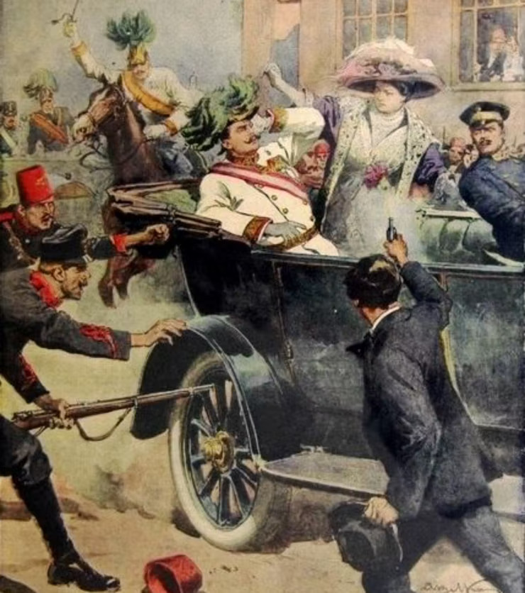
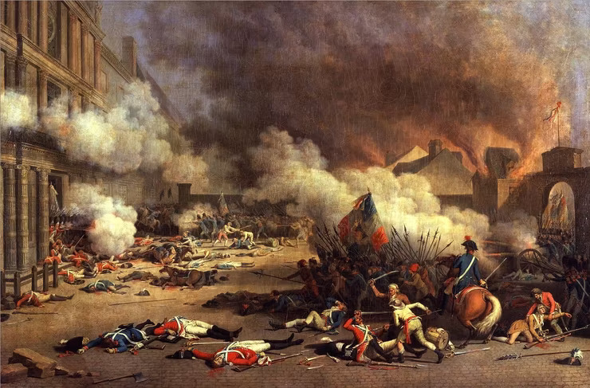

5 Most Important Historical Events That Changed The World Forever
History is important: every day, we are reminded of the power of the past to shape our lives and the society we live in, be it a family, nation, culture, religion, or some other historically constitut
History is important: every day, we are reminded of the power of the past to shape our lives and the society we live in, be it a family, nation, culture, religion, or some other historically constituted community. The way we understand history shapes our present and how we view the world and affects how we understand reality and our own futures. A proper understanding of how history shapes the present and the future is paramount to engaging and understanding the world around us.
We’ve attempted to create an unbiased list that touches on the most influential and major events in world history, the ones that shaped the world more than any other. Some of the events cover just a few years, while others cover centuries. Some impacted only a single country or continent, while others spread out and touched every continent on earth. Some are violent conflicts like wars or revolutions, while others were scientific revolutions of the mind that brought human beings around to whole new ways of thinking and living. But no matter their differences, each of these events left behind a brave new world in their wake. For the sake of historical and scientific objectivity and accuracy, this list will exclude mythological events such as the Trojan War. This list will also exclude religious matters such as the life of Muhammad or Jesus of Nazareth.
To that end, here is our humble attempt to list the top 5 most important historical events that shaped our modern world.
5/5
The Black Death (1346-53)
The 14th century epidemic of the “Black Death,” also called the black plague or bubonic plague, across Europe and Asia, has become one of the most infamous events in history. The plague killed 30-60 percent of the entire population of Europe, claiming a grand total of anywhere between 75 to 200 million lives. Population growth did not resume until a full century later, and the world population did not recover until the 17th century. The profound religious, social, and economic upheavals resulting from the Black Plague were permanent.
The massive death toll caused an extreme labor shortage, which meant higher wages for the peasants and a greater choice of who they wanted to work for. The land was plentiful, and lords were forced to try and make conditions more attractive to the peasants. Serfdom all but disappeared as a result, and this “golden age” of prosperity would not be soon forgotten. Decades later, when the feudal lords tried to roll back these benefits and return to the old ways, the result was widespread peasant revolts. The Black Death also helped break the absolute authority of the Catholic Church.
5/4
Fall Of Constantinople (1453)
The fall of Constantinople came after a 53-day siege by the then 21-year-old Ottoman Sultan Mehmed II, who fittingly took the title Mehmed the Conqueror. Constantinople was not just any city; it was the preeminent city in the world and had been an imperial capital for sixteen centuries. It had been the capital of the Roman Empire since 330 A.D.
The fall of the city was considered a massive boon to Islam and a blow to Christendom. Previously considered instrumental in the spread of Christianity and even named after the Roman Emperor Constantine, after the Ottoman conquest the city became a stronghold for Islam. The seizure of Constantinople became a precursor to further Ottoman expansion into Europe. Mehmed was even able to claim the title “Caesar,” since whoever possessed the imperial capital controlled the empire. The siege also marked one of the first times that artillery was used in combat, and the recapture of Constantinople remained a Christian pipe dream for many years after, though the Age of Crusading was at an end. The waves of Byzantine scholars and refugees following the sack of Constantinople had an impact on the Renaissance, bringing accumulated knowledge of the Greeks and Romans to Western Europe.
The conquest of Constantinople heralded not just the collapse of the Byzantine Empire and thus the “final” end of the Roman Empire after 1,500 years, and the rise of the Ottoman Empire, but also marked the end of the Middle Ages. Constantinople was renamed Istanbul and became the capital of Turkey until 1923.
5/3
October Revolution (1917)
The first successful socialist revolution began when the revolutionary movement in the Russian Empire overthrew the autocracy under the Tsar, and then Vladimir Lenin’s Bolsheviks led a second revolution overthrowing the Provisional Government. The overthrow immediately resulted in the establishment of the world’s first self-proclaimed socialist state, the Russian Socialist Federative Soviet Republic, followed by the beginning of the Russian Civil War. After the socialist Red Army beat the monarchist and capitalist White Army, they established the government of what would become the U.S.S.R., or Soviet Union, in 1922.
The October Revolution changed the course of World War I, set the stage for World War II, the rise and decline of Fascism, the spread and eventual fall of Communism, the Cold War, and decolonization, and became the inspiration for many more uprisings for years to come, such as the communist revolutions in Germany, Hungary, Mongolia. Cuba, Vietnam, China, and many other countries.
5/2
Assassination Of Archduke Ferdinand II (1914)
Historians now say that all roads in the twentieth century lead to World War I (1914-1918), which was caused by the assassination of Archduke Franz Ferdinand, heir to the Austrian throne, by Yugoslav nationalist Gavrilo Princip in June, 1914. By August of that year, Austria-Hungary declared war on Serbia, Germany declared war on France and Russia, and Britain declared war on Germany, starting a chain reaction of events that eventually involved all the great powers of the time.
The Great War was the first time modern lethal weapons were used in conventional warfare, including chemical weapons and tanks. Over 9 million people were killed and whole empires, like that of Russia, Germany, the Ottomans, and Austria, were dismantled. World War II’s origins can be traced back to the tenuous peace forged after WWI, known at the time as the Great War. No one could imagine anything worse until the world had to face WWII a few decades later.
5/1
French Revolution (1789-94)
It is not possible to overstate the importance of the French Revolution to world history. Not only did it shape the entire modern world as we know it and pave the way for capitalism to conquer feudalism, it set the stage for revolutionary uprisings and changes in all parts of the globe. The period of radical social and political upheaval during the French Revolution and the Napoleonic Wars that followed had a lasting impact not just on France or Europe, but the entire planet. It will always be remembered as the event that ended feudalism and whose shockwaves led to a total transformation of social structures in every country.
After the French treasury was drained (exacerbated by bankrolling and supplying the American Revolution), it created much misery and hunger, which led to anger against the monarchy. Images of the revolution, such as the Storming of the Bastille, the guillotine, and the gigantic personality of Robespierre, are now iconic. The French Revolution introduced the concept of the republic to the world, and Revolutionary France soon had to fight for its life in wars against all of Europe. It laid the basis for Napoleon Bonaparte’s coup and the wars that followed, which spanned every continent and introduced the modern concept of the corps system for the military (replacing hired armies), and the Napoleonic Code, not to mention the idea of total war.
By its mere existence and the worldwide historical and social transformations it caused, the French Revolution can easily be considered the most monumental historical event of the modern era, and more than any other, the defining historical event that changed the world forever.